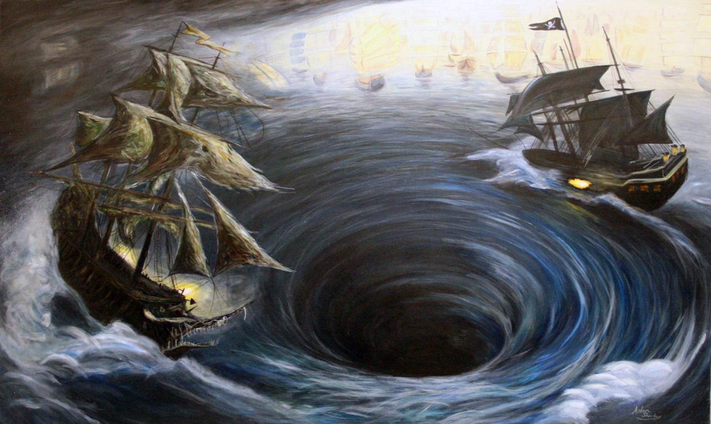

Este cuento es una de los que más me han gustado del autor ya que está inspirado en
el fenómeno del Maelström que es un remolino que se produce en las costas de Noruega,
formado por fuertes corrientes que atraviesan el estrecho de Moskenstraumen.
Al empiezo de la historia se me hizo un poco aburrida ya que el viejo que parece ser
el guía sube hasta lo más alto de un abismo y le cuenta a su acompañante
cómo se origina el fenómeno llamado Maelström, y que la apariencia que tiene no concuerda con su edad.
A partir de ahí empieza lo más interesante ya que el narrador de la historia logra su cometido, de que quedes atrapado
en la aventura que sufrió junto con sus dos hermanos, el cómo sin pensarlo un día normal sucedería algo tan terrible.
Las sensaciones que experimentas al ir adentrándote más en la historia te llena de suspenso y sientes empatía con el anciano
que relata el cómo entre la desesperación y el miedo ve a sus hermanos ser jalados por la corriente y desaparecer
en el fondo del remolino que se origina en el mar y el no poder hacer nada más que esperar su muerte igual que
lo hicieron sus hermanos. Así como alegría y alivio al ver la audacia del anciano al brincar del barco que está
siendo consumido por el remolino y sobrevivir al fenómeno del Maelström.
No soy mucho de historias relacionadas con el mar, pero la angustia que me produjo esta historia me mantuvo entretenido.